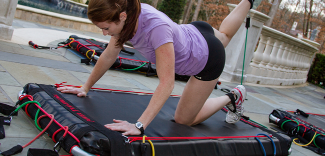

Jaimyn Jupiter's Power Trampologa
The NEW revolution in fitness
Power Trampologa
Jaimyn Jupiter's Power Trampologa is the most multidimensional at home or gym low impact fitness equipment workout station on the market that produces results guaranteed.
Results 3x's as fast!
It is designed to train every fitness level (all ages) including Beginner to advanced to professional athlete and offers exercise routines that target every facet of fitness. You can increase your strength, and lose weight while improving your flexibility and balance. The Power Trampologa workout station mat is a low impact core engaging device with resistance band attachments that provide an infinite variety of workout routines.
You can perform every traditional exercise move from bicep curls, squats, lunges, shoulder press, leg press, leg extention, leg curl, calf raises, tricep press, rows, glutes, chest press/flys ect. The possibilities are infinite.
Power Trampologa is revolutionary in that it fuses every fitness module in a new invigorating enjoyable way. Its a refreshing change. Children love the bouncy mat and have fun staying active. We are Proud to be manufactured in the USA. (Magic Circle Trampolines LLC, Phenix City Alabama)
Physical Therapy
Physical Therapy content goes here.